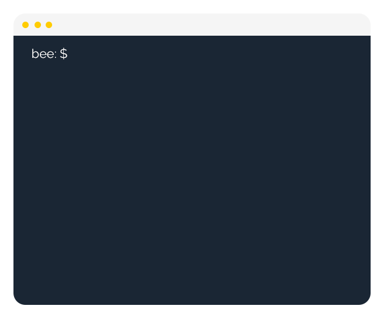
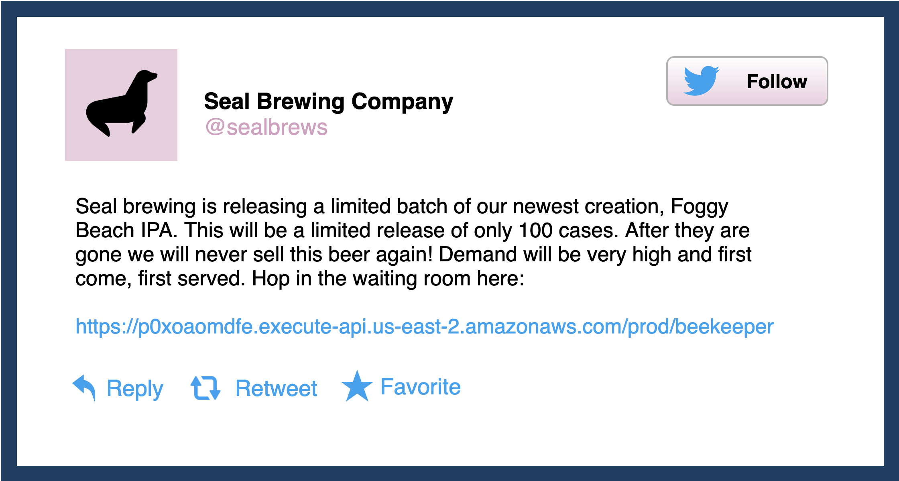

Beekeeper is an open-source Backend as a Service (BaaS) built to handle traffic from one-off events like a sale
Beekeeper is an NPM package that creates a CLI tool to spin up AWS services which make up a virtual waiting room.

Big event with a lot of traffic? No problem.
No need to beef up your existing legacy infrastructure for your event. Download the Beekeeper NPM package, answer a few simple questions, and you've got a scalable waiting room that can handle a lot of traffic. Send your customers to the generated URL and tell Beekeeper the rate you want to forward traffic from the waiting room to your endpoint.
